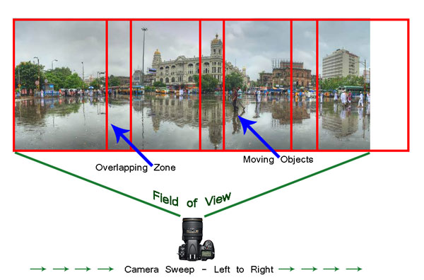

Panoramic Photography | Guide
#1 Shoot in Manual Mode
Since a panorama is shot over a large field of view where lighting conditions can be different, it is imperative to shoot in Manual mode with Manual Focus. This will ensure all the photographs shot have an exact exposure value and focus throughout all the images. Shooting in Automatic, Program or Semi-Automatic modes (like Shutter priority or Aperture priority) will result in different exposure values for each photograph, which in turn may cause the final merged photograph to have varied exposure and color casts in different parts of the photograph.
#2 RAW or JPEG?
While you generally want to shoot in RAW, it is preferable to switch to JPEG for panoramas. Shooting in RAW is absolutely fine, but since the photographs will not be edited individually (we will see this at a later stage) and to reduce shutter lag, shooting in JPEG is preferred. A word of caution – as we will be shooting in JPEG make sure the exposure values are correctly adjusted.
#3 Tripod or handheld?
If the weight of your tripod is not a factor, carrying it is always preferable. However on a bright day you can very well rely on your own hands. A steady posture, or using your camera bag or any sturdy object available to rest the camera on, will save you the weight of carrying a tripod.
#4 Horizontal or vertical?
We are generally accustomed to shoot in Landscape (horizontal) mode. Shooting in Landscape is fine but the resulting panorama will be short in height, since Landscape photographs will be stitched together. Additionally, during the stitching process there will be a lot of redundant or blank areas (you will see later during the post-processing) which need to be cropped out. This will further reduce the height of the panorama. To overcome this issue you may choose to shoot the panorama in Portrait (Vertical) mode. This will help in achieving a greater image height which can be cropped out as per requirement, say for printing or aesthetics.
#5 Be fast
Be very quick in shooting since light conditions change fast. Additionally if you are shooting a cityscape, a populated beach or a scenario where there is movement, be cautious. If you are not shooting fast enough, you will find moving objects (e.g., people, cars, bikes) will be duplicated across the frames. You would not want to see the same object twice across the panorama.
#6 Plan it out well
Stand at the selected spot and plan the number of shots in advance. This will help you in keeping a control of the number of shots rather than shooting randomly. Be sure to do a mock round without actually shooting.
When you are ready, start shooting from left to right. Make sure you have at least 20% overlapping areas in two consecutive photographs. An visual estimate will suffice. Look through your viewfinder and shoot. Do not look at the individual photographs on your LCD screen until you finish shooting. Before leaving the scene turn on the LCD screen and review the photograph series. If you are not happy, shoot again.